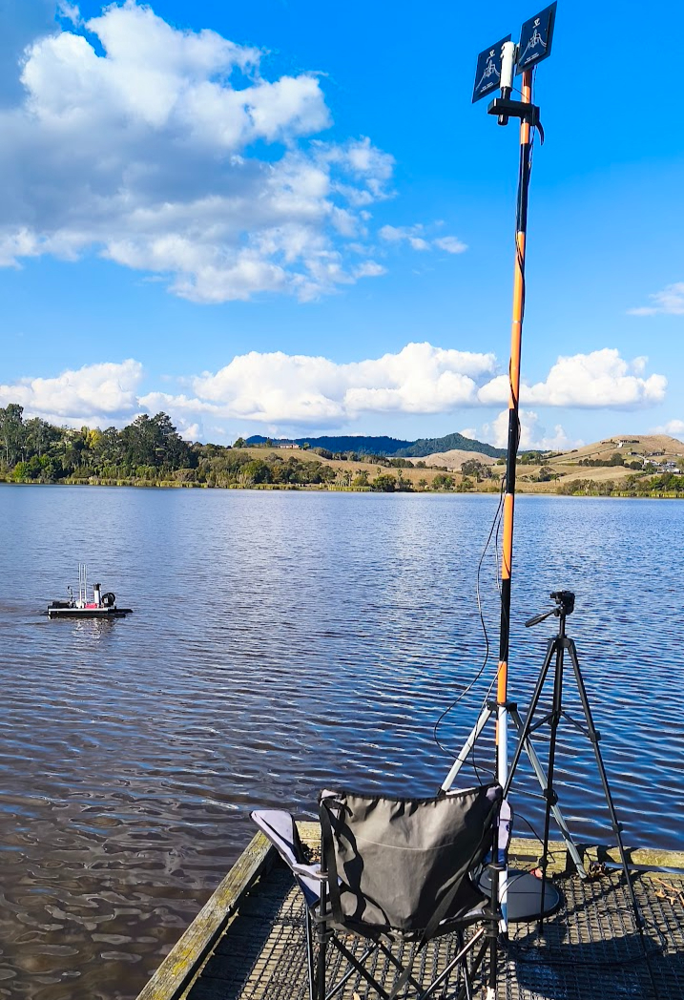

During the summer of 2024-2025, MĀKI collaborated with the Waikato Regional Council to deploy our MĀKI Boat V2 for environmental monitoring and water sampling across several freshwater locations. This initiative supported the council's efforts to collect reliable data during algae bloom events, when accurate and timely information is essential for effective water quality management.
The MĀKI Boat V2 is a compact, fully autonomous surface vessel designed for scientific-grade data acquisition and automated water sampling. Measuring approximately 1.5 m x 1 m and weighing 15-20 kg, it can be transported and launched by a single operator. Its wide, stable hull allows for precise profiling and sensor deployment, even under moderate field conditions.

Equipped with a Trilux 2000 sensor (chlorophyll-a, phycocyanin, turbidity), a dissolved oxygen probe with pH and temperature sensing, and a single-beam sonar (with optional multi-beam upgrade), the system provides a comprehensive view of aquatic environments. The integrated 15 m winch collects discrete-depth water samples of up to 3 litres, enabling high-fidelity analysis for nutrient and biological studies.
All readings are georeferenced, with GPS position-holding and RTK-enabled precision providing centimetre-level accuracy for repeat surveys. The system's IP67-rated design and rapid decontamination process ensure safe deployment across multiple sites while maintaining biosecurity compliance.
The MĀKI Boat V2 operates up to 2.5 km from the controller or indefinitely via cellular connectivity, with real-time data streaming and flexible data-output formats for seamless integration with analytical platforms.
Following the success of last summer's collaboration, MĀKI expects to extend its monitoring operations to additional lakes across the Waikato and beyond during the 2025-2026 season. With increasing attention on cyanobacteria (blue-green algae) and its impacts on freshwater ecosystems, this autonomous vessel is proving to be an effective platform for scientific study, research, and long-term environmental monitoring.
At MĀKI, we remain committed to advancing autonomous technologies that help researchers and regional authorities better understand, protect, and manage New Zealand's freshwater environments.